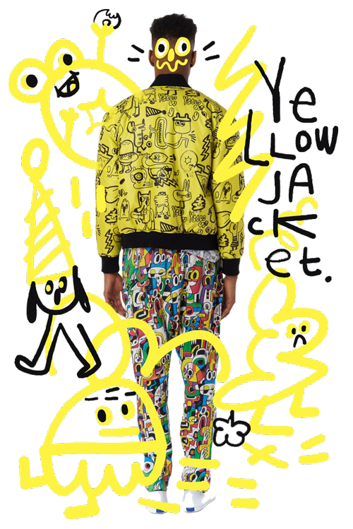

Jon
Burgerman
interview by Tammi Heneveld
July 28, 2015
Photo by Annie Collinge
Has it been a year already? We caught up with UK-born, NYC-based artist, Jon Burgerman, about the numerous projects and delightful collaborations he’s been working on, why it’s important for him to take more risks, and the outside influences that continue to inspire him.

What kinds of projects have you been working on since we first interviewed you in 2014?
I’ve been working on lots of projects. I had a big touring exhibition throughout Korea earlier this year and showed some animated art on Seoul Square, which is the largest LED screen in the world. I also painted a couple of murals for Samsung, which were filmed and then shown in Times Square and other large screens all over the world. It was a strange experience to actually be in an advert as opposed to just making artwork for it. I’ve also started a performance piece called The Selfless Selfie in which I paint people in 60 seconds as they paint me. I designed a collection of about 12 fabrics for Kirkby Design, which will be launched at the big designjunction fair in London this September. On top of that, I’ve been giving lectures and am currently making a couple of books, along with other art, performances, products, clothing, and murals. So basically, I’m always working on something, all the time.
We recently received a really nice care package at our office with some goodies from your collaboration with Luc Belaire! How did that come about?
They emailed me. I thought it sounded fun, and I said yes. It was a simple, easy job with nice people. Plus, they sent me a load of fancy drinks to help “inspire” me. I still have some bottles left, so if anyone has something to celebrate or wants to have a boozy picnic with me, get in touch!
I’ve tried to take more risks with my work, because I don’t want to do the same things over and over again.
Mural in progress at Xians Famous Foods; photo by Tom Brown
We heard through the grapevine that you might be working on an animated TV show. Please tell us it’s true.boration with Luc Belaire! How did that come about?
Yeah, I’m actually working on two shows! One went to pilot, and we’re waiting to see if it will go into production. The other is in development, but will hopefully go to pilot, too. To be honest, it’s not easy. It’s a real long shot working on TV shows: very few new ones get made. If they do get made, they get dropped if they’re not popular straight away, so don’t expect to see my shows on TV anytime soon. But I’ve wanted to make a cartoon show since I was a child so—hell, I’m giving it a bloody good go!
Piece from Jon Burgerman x Print All Over Me clothing collection
Have you taken any big risks over the past year?
I’m not sure. Does eating Asian food in Germany count?
I’ve tried to take more risks with my work because I don’t want to do the same things over and over again. I don’t understand artists who do almost exactly the same projects over and over. I couldn’t work like that! I need to work in different materials, make different things, and use different hands—though that last one is, of course, a little limited.
When I worked with Kirkby Design on our fabrics collection, I made it clear that there was no point working with me if they wanted safe designs. I pushed to make crazy prints, and they eventually acquiesced. Everyone was super happy, and I think a highly regarded furniture manufacturer took the craziest design as a production exclusive. No risk equals no fun.
Outside of my work, I try not to take risks in my day-to-day life because my bones are super breakable, and I’m a coward and fearful of any sort of aggression with other humans.
In your 2014 interview, you spoke about maintaining a “sweet spot” between working hard, but still allowing yourself be inspired by downtime. Is this still your common practice?
It’s easy to say that, but much harder to keep in practice. Yes, I am still part-slacker, and, yes, I also work all the time. The summer makes it easier to stop working, though: it’s too hot and humid in New York to think. As always, if you enjoy what you do, then it’s not really work. Or at least not hard work. I love work, but I hate hard work.
What experiences have you had in the past year that have influenced your work or creativity?
I don’t know if it’s that easy to say because I don’t think I’ve had any “Aha!” moments. Sometimes you don’t get a true understanding of what has influenced you until you step back and look at your work over a certain period of time. For example, I went to see the “Henri Matisse: The Cut-Outs” exhibition at MoMA and loved it. So I went home and made some paper cut collages that basically borrowed Matisse’s language. I wouldn’t call that a deep influence; it’s more of an infatuation. It’s not the same as seeing something and copying it. I haven’t made any paper cut collages since then, so calling it an influence wouldn’t be true. But maybe I picked up something more subtle from looking at his work? It’s not always just something on the surface.
Since we last chatted, I think I’ve traveled—in some cases multiple times—to the UK, Ireland, Germany, France, Spain, Denmark, the Netherlands, Korea, and other places for work. I can’t say exactly what rubbed off on my practice from those trips, but I do know I came back to New York energized and excited to make work. Time will tell what influences I really picked up.
What’s next for Jon Burgerman?
I want to jump into an outdoor swimming pool and drink a beer whilst eating a large salad with a side of french fries. Can you make that happen for me?!
This interview by The Great Discontent was redesigned by Yeoj Kwon in Editorial Design for Screen taught by Dylan Greif at RISD Spring 2016.
Burgerworld installation, Avenuel Art Hall, Seoul; photo by Jon Burgerman